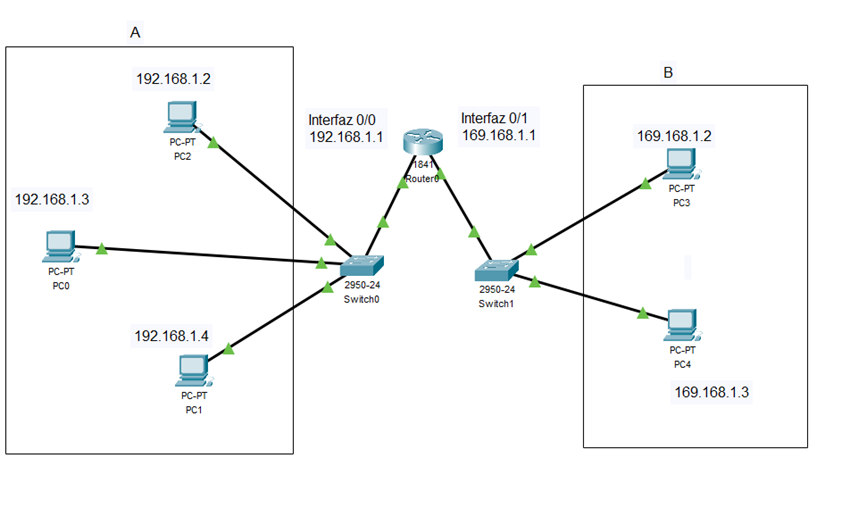
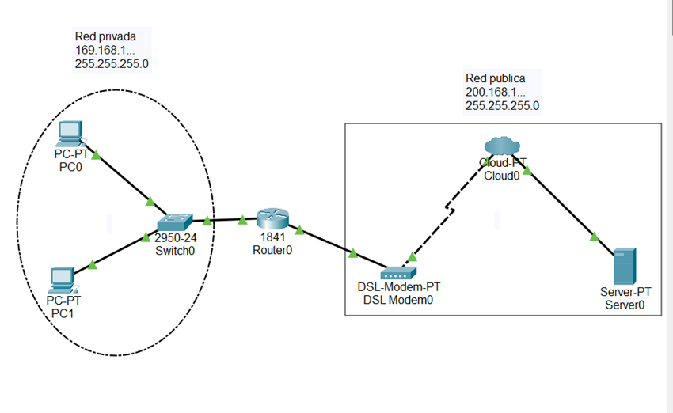
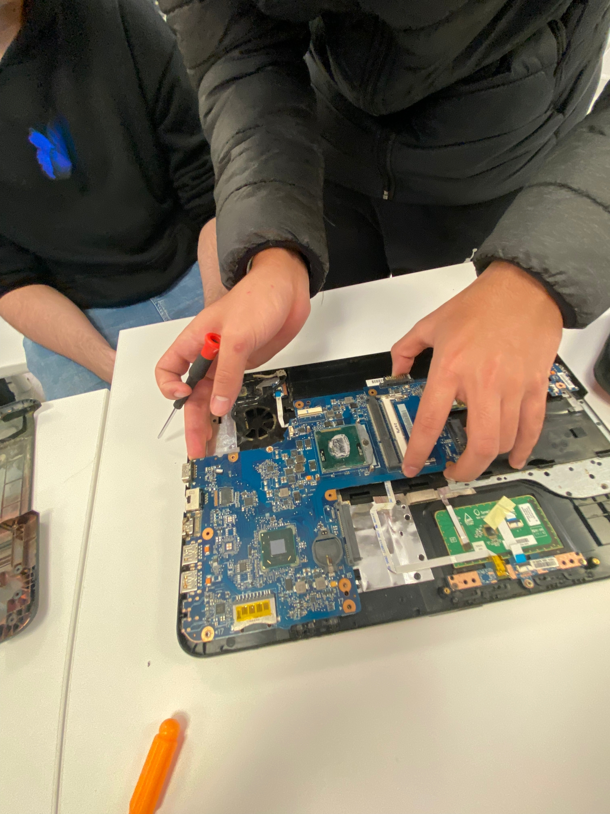
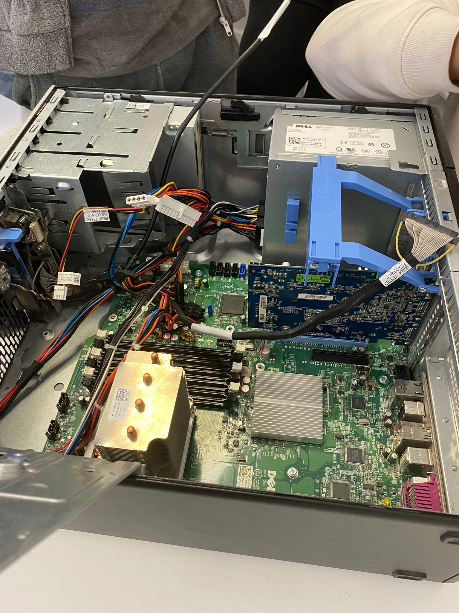

Antonio Jesus Carmona Lara
Econtramos varios ejemplos donde utilizamos la tecnologia de Cisco para ver el funcionamiento de redes, con cosas como servidores DNS, subredes, red privadas y publicas, servidor DHCP, NAT dinamico, y mas.
 Realizamos en grupos un proyecto basado en la reparacion de torres de ordenadores, los cuales una vez reparados fueron donados a personas que pudieran sacarle el maximo provecho.
 Realizamos un inicio de sesion y un registro en el cual nos dara acceso a un CRUD de una base de datos, donde simulares las notas de estudiantes.